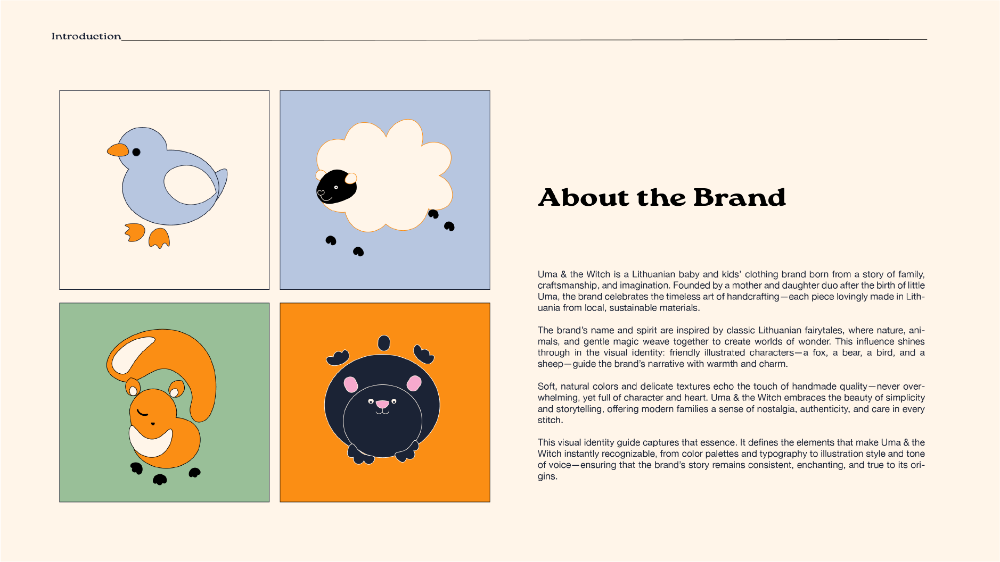
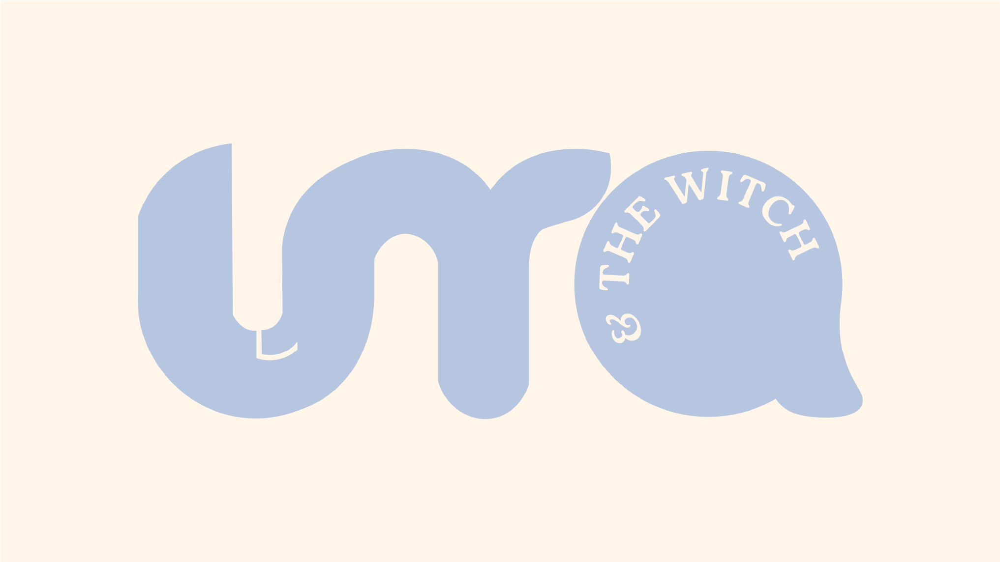
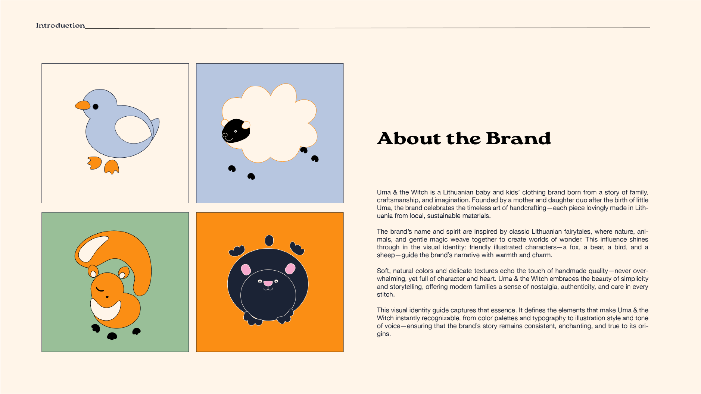
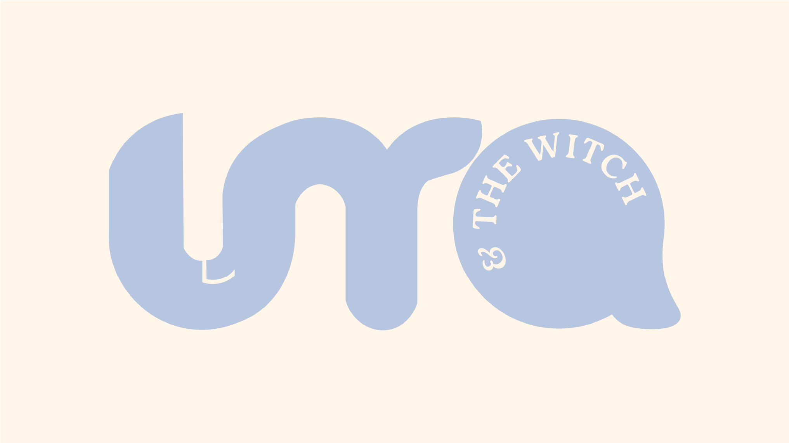
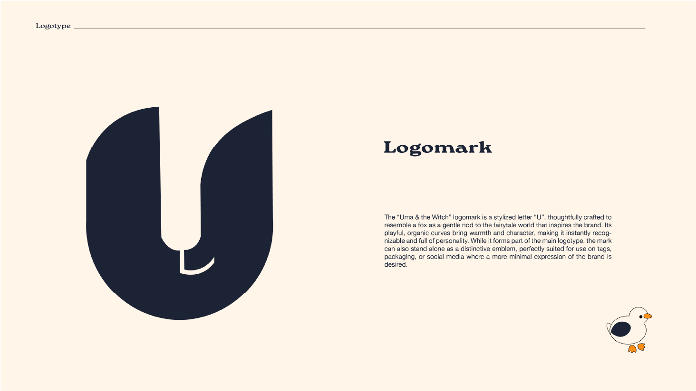
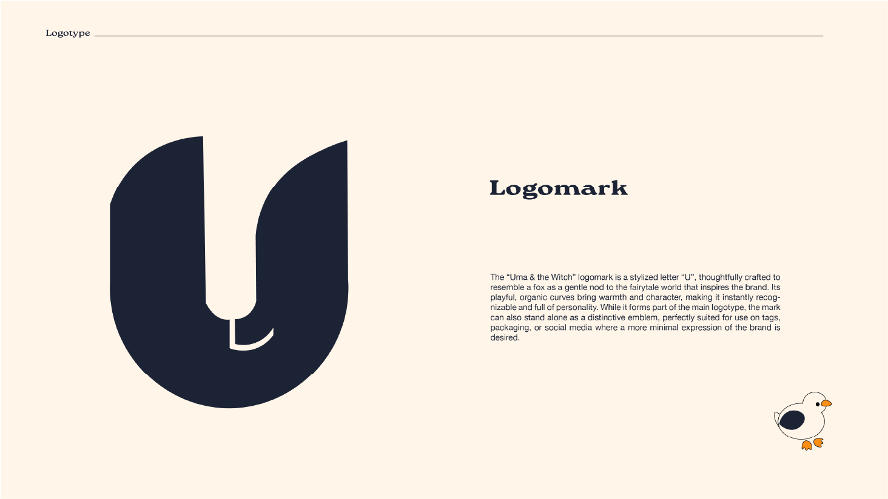

UMA & THE WITCH BRAND IDENTITY
Brand Identity, Logo Design, Packaging
Uma and The Witch is a sustainable children's clothing brand founded in Lithuania in 2022 by a mother and daughter duo. I developed the brand identity to reflect their commitment to craftsmanship, eco-conscious values, and the whimsical spirit of childhood. Drawing inspiration from fairy tales and storytelling, the identity captures the magic behind each thoughtfully made piece—creating a visual language that feels timeless, imaginative, and true to their vision.
 



 
